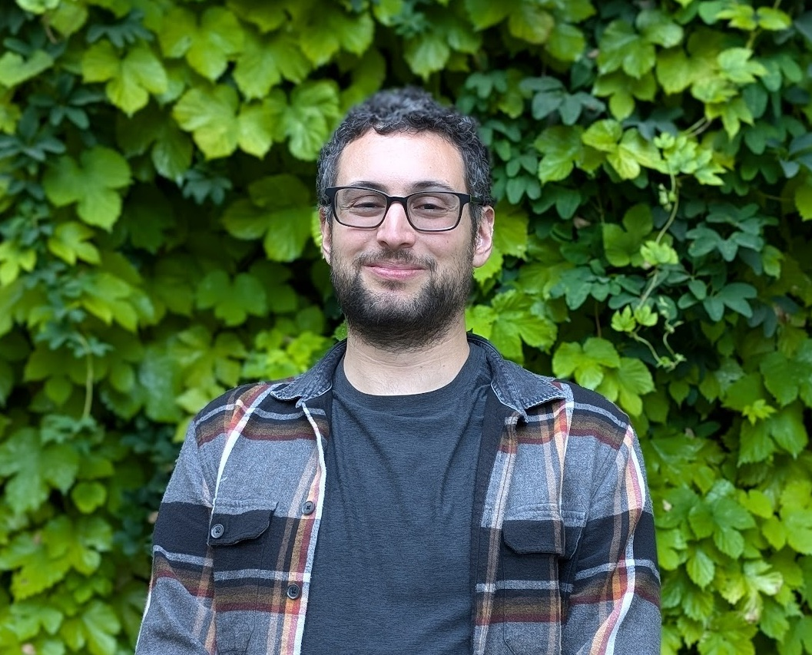

I have over a decade of experience developing and applying deep learning models to genomics. My past research has included using nanopores to detect modified cytosines on individual DNA strands, large-scale imputation of epigenomics data, sequence-based predictive models for bulk and single-cell data, and design of regulatory elements. I also write about the pitfalls one can encounter when applying machine learning to genomics data.
I did my Ph.D. at the University of Washington with Dr. William Noble, a post-doc at Stanford with Dr. Anshul Kundaje, was a visiting scientist at the Research Institute of Molecular Pathology (IMP) in Vienna, and am now an Assistant Professor at UMass Chan Medical School.
I run the Programmable Genomics Lab, where we develop methods for designing regulatory elements with precise and subtle properties, develop design-focused and light-weight deep learning models, and write usable software to get as many scientists using these methods as possible.
Team
My current work focuses on building deep learning models to understand and design genomic regulatory elements. I completed an M.S. in Biomedical Engineering (Bioinformatics and Machine Learning) at Columbia University, where I worked on modeling foregut morphogenesis and multimodal integration of single-cell omics datasets. Previously, I studied Mechanical Engineering at IIT Ropar, where I worked on modeling bone formation dynamics under mechanical stimuli. Across these diverse areas, my work has centered on using quantitative methods to understand biological systems.